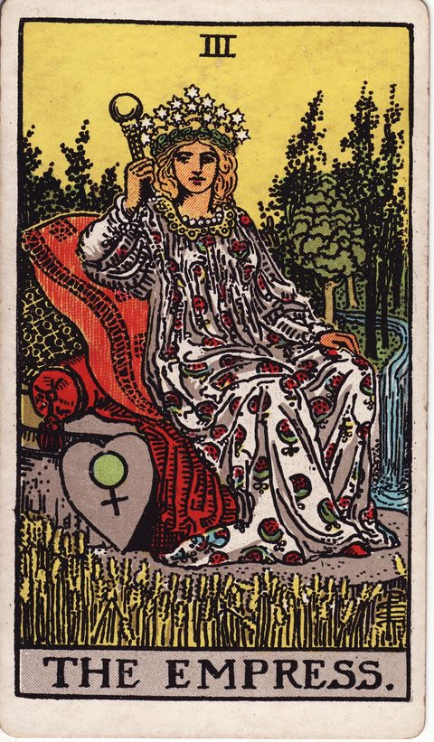

女帝の意味
The Empress

- 分類大アルカナ
- 象徴金星／数字3
- 正位置豊かさ・育成・愛情
- 逆位置停滞・過保護・依存
創造性と豊かさを知る段階。育て、受け取ることを学びます。
描かれている象徴
麦畑と森に囲まれ、クッションに身を預ける豊かな女性。金星の印を刻んだハートの盾、星の冠、流れる水が、愛と実り、育みを表します。何かを育てて収穫するときの豊かさと安心感を象徴する札です。
正位置の意味
- 豊かさ
- 育成
- 愛情
丁寧に育てたものが実る時期です。心地よさを大切に。
進めやすさ：5 / 5（追い風が強い）
- 見落としていること
- 成果より、育てている過程で得ている喜びを見落としていないか。
- 進むときの注意点
- 心地よさに浸りすぎて、次の収穫の準備が遅れないように。
- 本音（本当はどうしたい？）
- 何を育て、誰と豊かさを分かち合いたいのでしょうか。
- 手放してよいこと
- 「もっと厳しくしなければ」という自分への追い込みは、もう十分です。
- 決め手になる違い
- 長く育てていける楽しさがある方が、一歩リードです。
逆位置の意味
- 停滞
- 過保護
- 依存
与えすぎや甘やかしで、実りが滞っているかもしれません。
進めやすさ：3 / 5（条件しだい）
- 見落としていること
- 世話の焼きすぎや甘やかしが、成長を止めていないか。
- 進むときの注意点
- 感情や快適さに流されて、必要な決断を先送りしないこと。
- 本音（本当はどうしたい？）
- 与える側でいたいのか、本当は受け取りたいのかを見つめて。
- 手放してよいこと
- 「私がやらなければ」という抱え込みは、少しだけ分けてもいいのです。
- 決め手になる違い
- 自分がすり減らずに続けられる方を選ぶと、長持ちしそうです。
決断・迷いにおけるヒント
決断の場面での読み方
女帝は、時間をかけて育てたものが実りを迎える豊かさの札です。決断の場面では、短期の損得よりも「この選択は半年後、一年後に何を育てるか」という視点を与えてくれます。麦畑や流れる川に囲まれた姿は、心身が満たされていることの大切さも示しています。無理を重ねて得る成果より、自分や身近な人が心地よくいられる選択の方が、長い目で見て実を結びやすいでしょう。
よくある迷いとの向き合い方
仕事と家庭、挑戦と安定のように、どちらも大切で選べないときに出やすいカードです。正位置なら、自分が安心して力を発揮できる環境を優先してよいサイン。逆位置では、相手を思うあまり手をかけすぎていないか、あるいは誰かに頼りきっていないかを見直す時期かもしれません。
決断前に自分に問いかけたいこと
この選択は、自分や周りの暮らしを豊かに育てる方向に向いているか。心地よさと怠けを取り違えていないか。実りを受け取るまでに必要な時間を、焦らず待てる余裕が今の自分にあるか。
「進めやすさ」は、その選択肢を「いま進める」ときの追い風の強さ。運勢の良し悪しではない。